用 OBS 開台：Agora 串流設定
Go live with OBS: Agora streaming setup
跟著下面 6 個步驟，把 Moor 給你的串流金鑰接到 OBS，大約 5 分鐘可以完成。每一步都附截圖，畫面上紅框標出來的地方就是要點的按鈕或要貼上的欄位。
Follow the 6 steps below to connect your Moor stream keys to OBS — it takes about 5 minutes. Every step includes a screenshot; the red box marks the exact button to click or field to fill in.
開始之前
Before you start
安裝 SWAG Agora 插件
Install the SWAG Agora plugin
- 下載 SWAG Agora 插件（Windows）。
- 解壓縮後，開啟 SWAG Agora 的資料夾。
- 雙擊
Agora-Tool-4.5.2.4-Installer。 - 一路點 Next，再點 Install 完成安裝。
- Download the SWAG Agora plugin (Windows).
- Unzip it, then open the SWAG Agora folder.
- Double-click
Agora-Tool-4.5.2.4-Installer. - Click Next through the setup, then Install to finish.
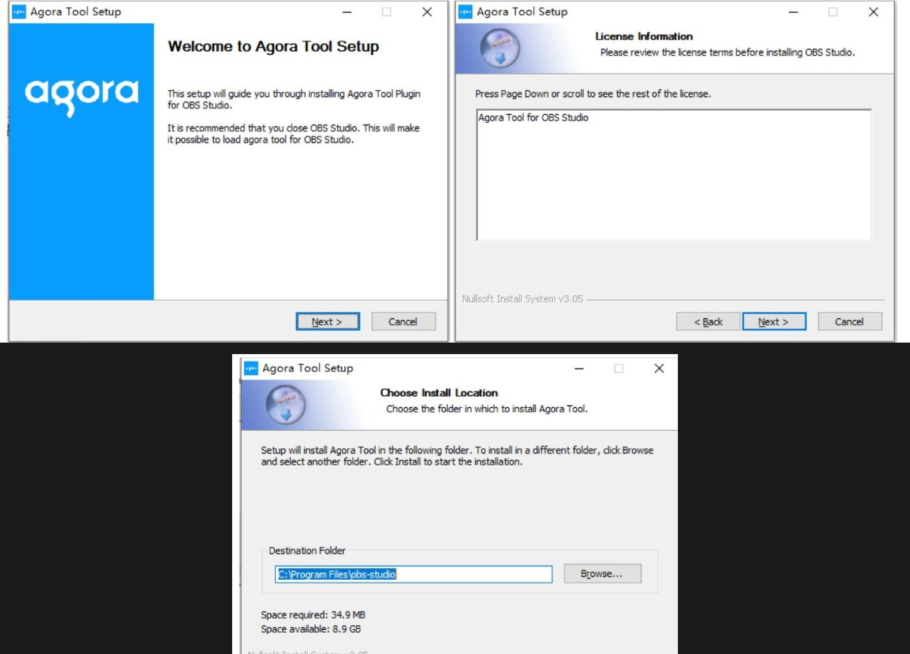
- 下載 SWAG Agora 插件（Mac，.pkg 檔）。
- 下載完點開
agora-tool-MAC.pkg開始安裝。 - macOS 通常會先擋一次，跳出「未打開」的警告視窗 —— 這是正常的，跟著下面兩步驟排除就好。
- Download the SWAG Agora plugin (Mac, .pkg file).
- Open
agora-tool-MAC.pkgto start installing. - macOS will usually block it once with a "Not Opened" warning first — that's expected, just follow the two steps below to clear it.
如果跳出「未打開」警告視窗：
If you see a "Not Opened" warning window:
- 在警告視窗中按 「完成」（不要選「丟到垃圾桶」）。
- Click Done in the warning popup (do not choose "Move to Trash").
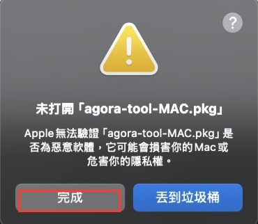
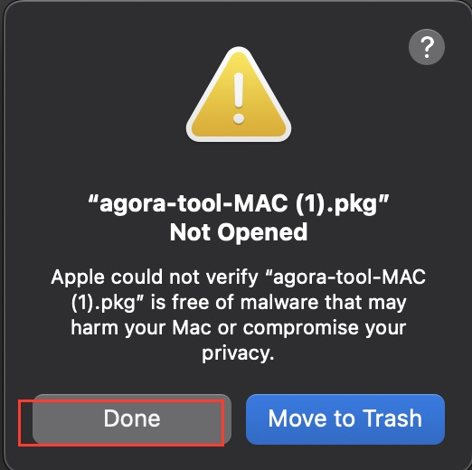
接著手動放行：
Then manually allow it:
- 打開 系統設定 → 隱私權與安全性。
- 往下滑，找到被阻擋的
agora-tool-MAC.pkg，點 「強制打開」。 - 再點一次「強制打開」，輸入電腦密碼即可。完成後就能正常繼續安裝插件。
- Open System Settings → Privacy & Security.
- Scroll down to find the blocked
agora-tool-MAC.pkg, then click Open Anyway. - Click Open Anyway again and enter your Mac password. The installer will then continue normally.
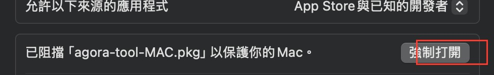
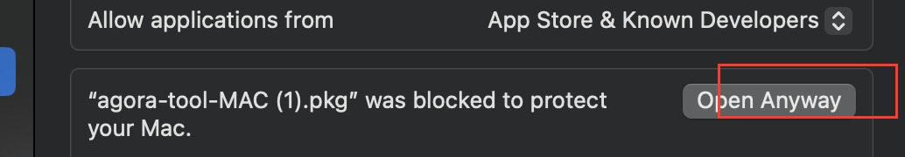
開始直播，打開 Moor 的串流設定視窗
Go live and open the stream-setup window in Moor
- 打開 Moor（你平常直播用的網頁），點擊「開始直播」。
- 畫面會自動跳出一個「串流設定」視窗。
- 確認視窗標題寫的是 Agora RTC 串流設定。如果顯示 TRTC，點畫面最下面的「切換模式」換成 Agora。
- Open Moor (the web app you use to go live) and click "Start Live".
- A stream-setup window pops up automatically.
- Check the title says Agora RTC Streaming Configuration. If it shows TRTC instead, tap "Switch mode" at the bottom to switch to Agora.
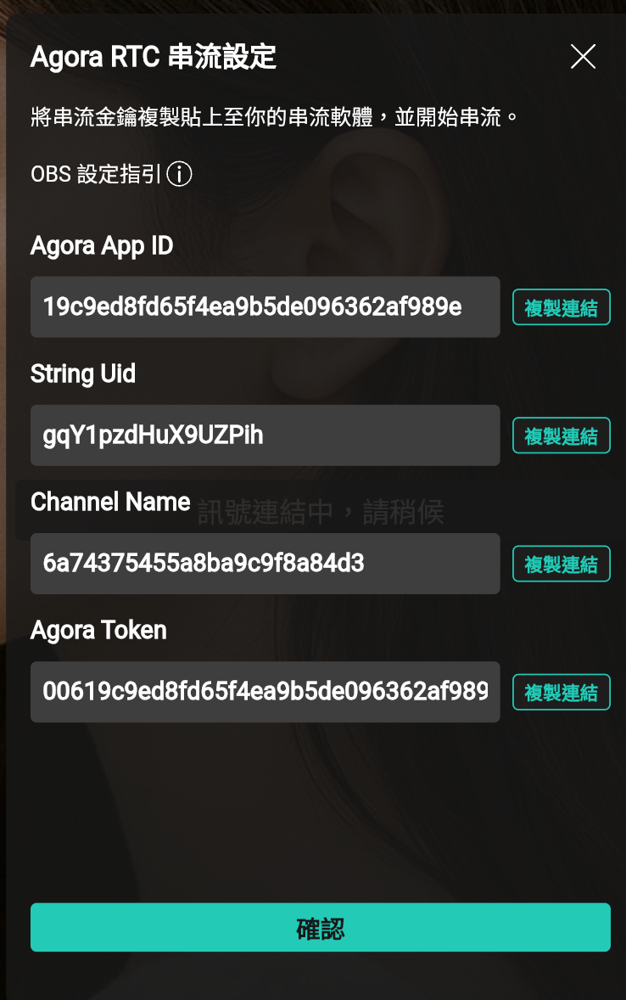
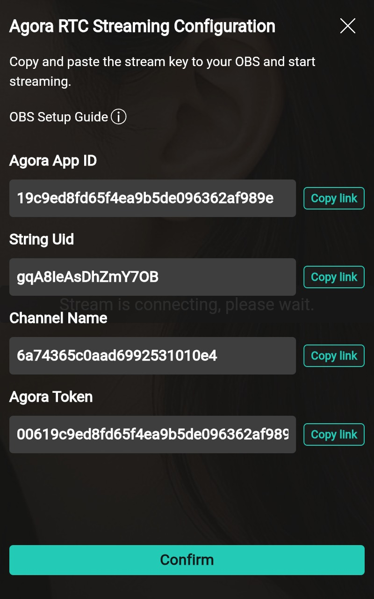
Scroll down in the popup to find the "Switch mode" option.
在 OBS 打開聲網連麥設定
Open the Agora connect settings in OBS
- 開啟 OBS，點擊上方選單「工具」→「聲網連麥」。
- 跳出的小視窗裡，點擊「設定」。
- Open OBS, then click Tools → Agora RTC Tool in the top menu.
- In the window that appears, click Settings.
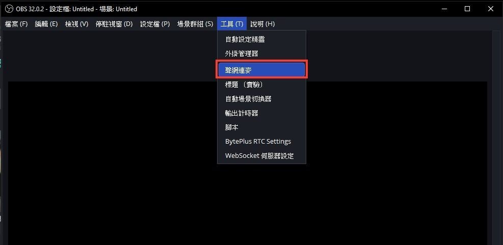
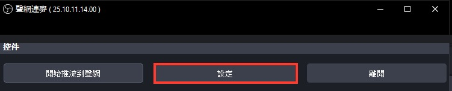
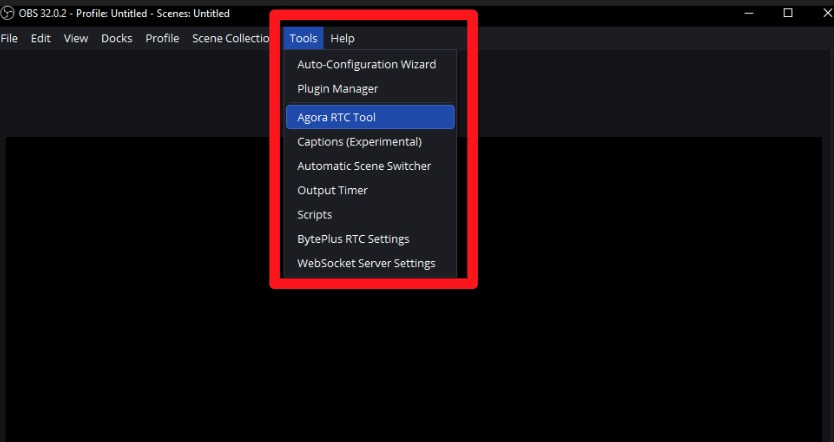
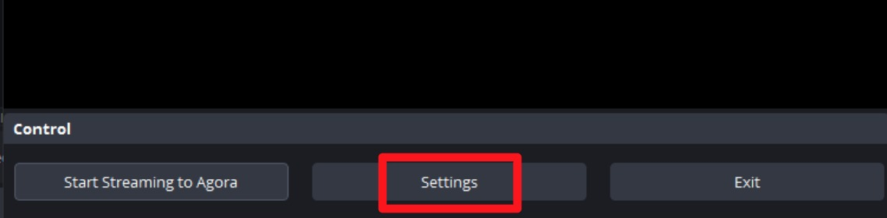
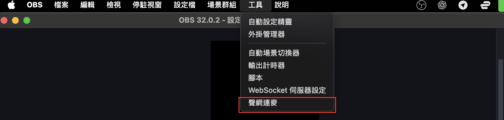
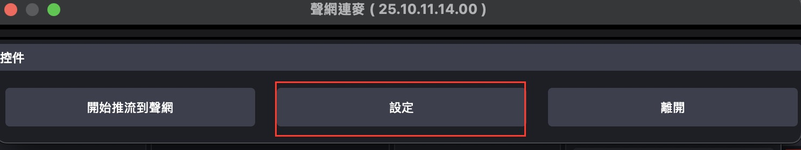
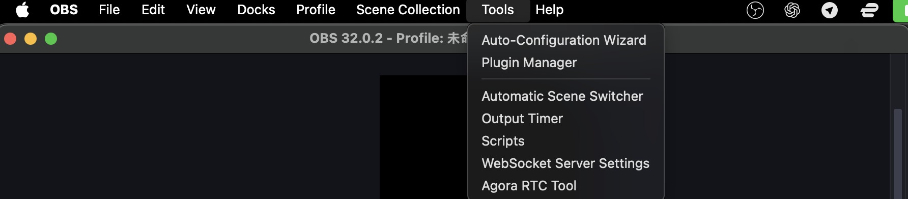
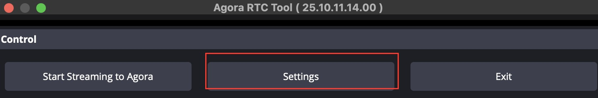
把 Moor 的資料複製貼到 OBS
Copy the values from Moor into OBS
回到步驟 2 留著的視窗，把 4 組資料依照下表複製貼到 OBS 的設定視窗裡：
Go back to the window from step 2, and copy each value into the matching OBS field:
| Moor 顯示的名稱 | 貼到 OBS 的欄位 |
|---|---|
| Agora App ID | APPID |
| Agora Token | AppToken（可選） |
| Channel Name | 頻道 |
| String Uid | 用戶ID |
| Moor field | OBS field |
|---|---|
| Agora App ID | Agora APPID |
| Agora Token | Token (Optional) |
| Channel Name | Channel Name |
| String Uid | Uid (Optional) |
| Moor 顯示的名稱 | 貼到 OBS 的欄位 |
|---|---|
| Agora App ID | APPID |
| Agora Token | AppToken（可選） |
| Channel Name | 頻道 |
| String Uid | 用户id（勾選右邊 Basic.Agora.StringUid） |
| Moor field | OBS field |
|---|---|
| Agora App ID | Agora APPID |
| Agora Token | Agora Token (Optional) |
| Channel Name | Channel Name |
| String Uid | Uid (Optional) — check "Basic.Agora.StringUid" on the right |
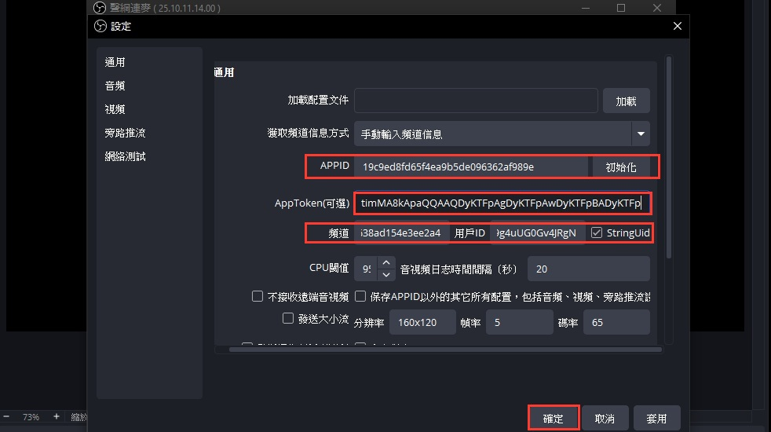
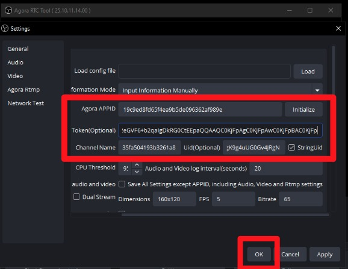
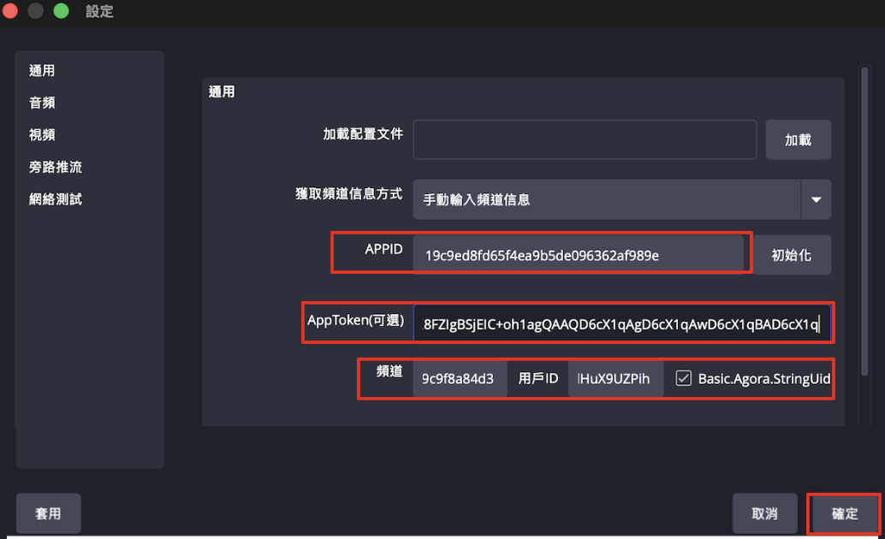
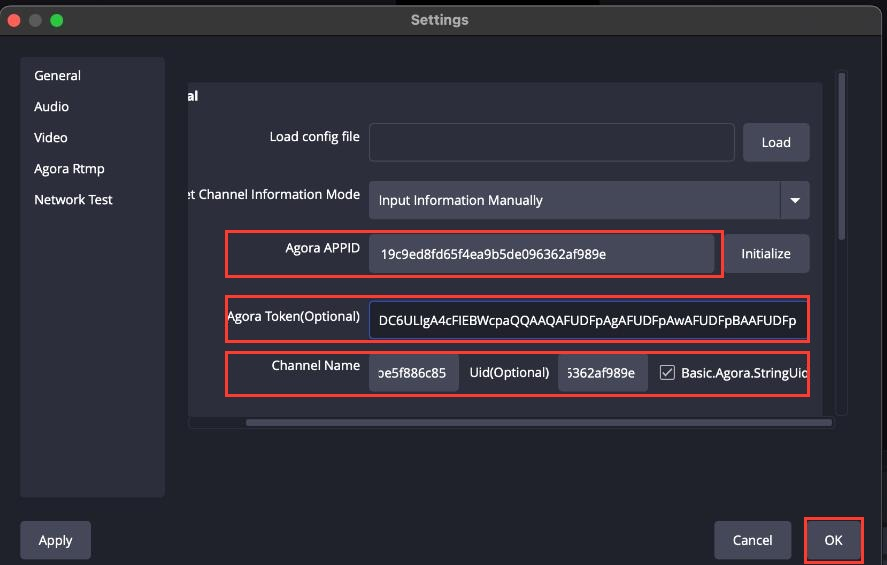
全部貼好、確認打勾後，點擊「確定」。
Once everything is filled in and checked, click OK.
開始推流
Start streaming
- 點擊「開始推流到聲網」。
- 按鈕會變成藍色的「停止推流到聲網」——這是正常的，代表已經在推流中，不是壞掉。
- 回到 Moor，畫面顯示「已連接訊號源」就代表成功了！
- Click Start Streaming to Agora.
- The button turns blue and changes to "Stop Streaming to Agora" — that's expected, it just means the stream is now live, not that anything broke.
- Back in Moor, once you see "Stream Source Connected", you're done!
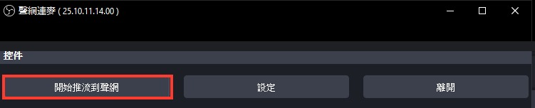
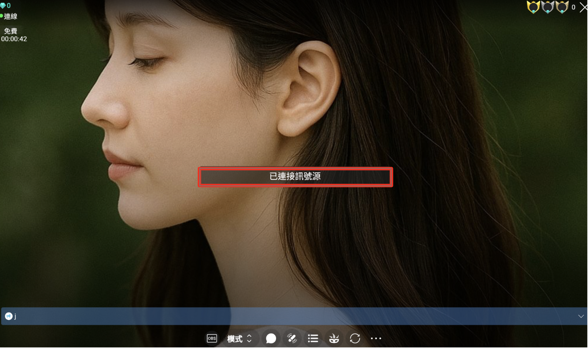
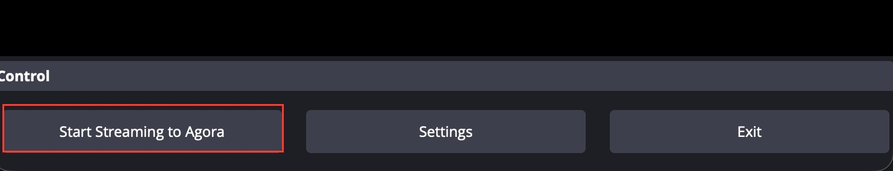
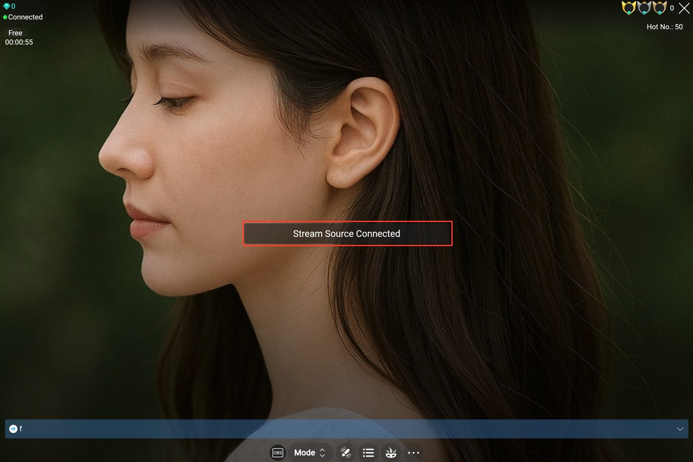
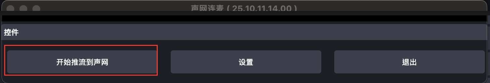
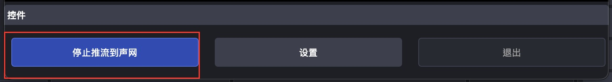
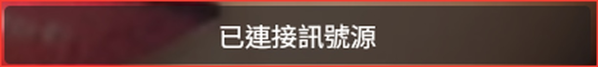
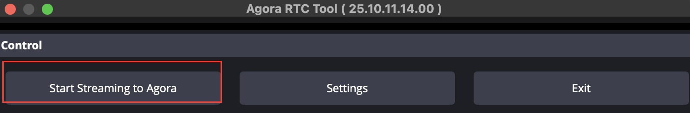
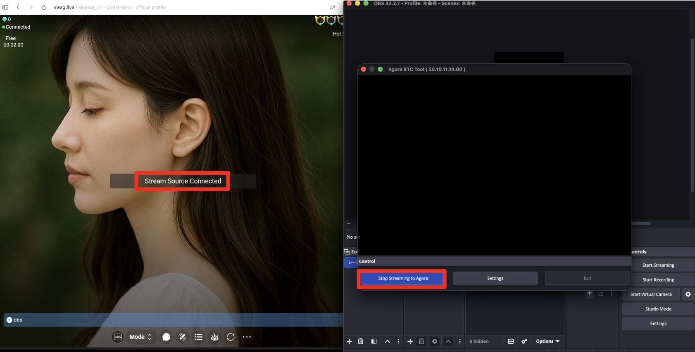
常見問題
Troubleshooting
每次開播都要重新貼一次資料嗎？
是的——Channel Name 跟 Agora Token 每場直播都會變動，開播前務必回到 Moor 複製最新的值。
Do I need to re-paste the values every time?
Yes — Channel Name and Agora Token change every stream, so copy the latest values from Moor before each broadcast.
OBS 啟動時出現無法載入 "agora-ui-tools" 的錯誤？
到 C:\Program Files\obs-studio\data\obs-plugins，移除資料夾裡的 agora-tool-ui，重新安裝 Agora 插件後重啟 OBS 即可修正。
到 ~/Library/Application Support/obs-studio/plugins，移除 agora-tool-ui.plugin，重新安裝 Agora 插件後重啟 OBS 即可修正。
OBS shows an error that it can't load "agora-ui-tools"?
Go to C:\Program Files\obs-studio\data\obs-plugins, remove the agora-tool-ui folder, reinstall the Agora plugin, then restart OBS.
Go to ~/Library/Application Support/obs-studio/plugins, remove agora-tool-ui.plugin, reinstall the Agora plugin, then restart OBS.
影片教學
Video walkthrough
文字看不夠清楚？跟著錄好的完整操作影片一步步做。
Prefer to watch? Follow the full recorded walkthrough step by step.